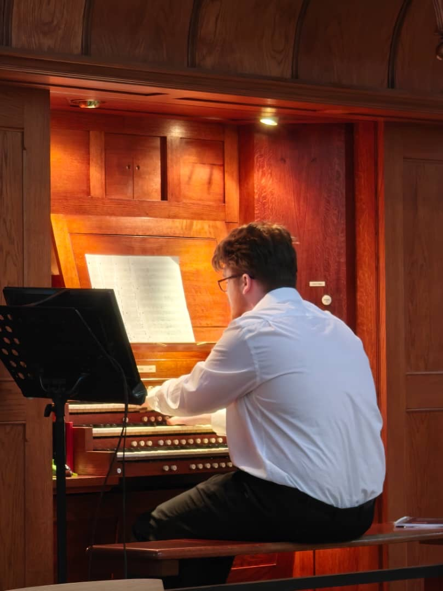

Biography

Carlo began playing both piano and organ at the young age of two years old. After being self taught for six years, he enrolled at the prestigious “St Mary’s Music School” in Edinburgh, Scotland, where he stayed for nine years, studying the organ with Duncan Ferguson, the master of music at St Mary’s Cathedral, and the piano with both John Bryden and Richard Beauchamp.
At the same time, Carlo became a chorister in St Mary’s Cathedral Choir, during which time he sang concerts both solo and with the choir around Europe in countries such as France, Italy, Austria and the Czech Republic. During this period, Carlo also gave concerts around Scotland as a pianist, accompanist and organist, notably in a critically acclaimed concert in the Usher Hall (Edinburgh, Scotland) at the age of 16.
In 2023 Carlo moved to Paris and began studying organ with Eric Lebrun and David Cassan at the Conservatoire à Rayonnement Régional de Saint-Maur, and also with Maestro Jean-Paul Imbert at the Schola Cantorum, where he received his Diplome de Concert with the highest possible mention of très bien avec felicitations à l’unanimité.
While in Paris, Carlo has already played for services and concerts in churches such as La Madeleine, Saint-Jacques du Haut-Pas (where he accompanied the choir of the École Polytechnique), La Trinité and the basilica of Sainte-Clotilde, where he is at this moment the youngest organist ever to accompany mass.
In the summer of 2025, Carlo was a finalist for the Tournamire Prize in the world renound St Albans Organ Competition and from september, Carlo is continuing his studies at the HEMU in Lausanne with Benjemin Righetti.